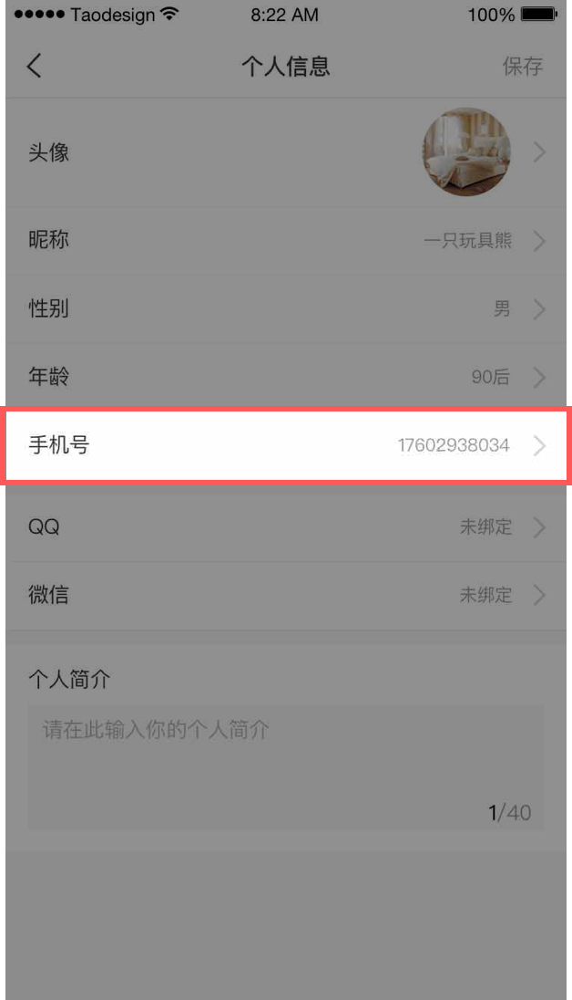

如果您需要更换注册手机号，请首先确保新手机号内没有摩宝押金和摩宝余额，以避免更换手机号导致新手机号的押金和余额被覆盖。
具体更换步骤：
1. 请您使用原手机号登录，退回押金；
2. 点击APP左上角小人头，点击个人头像进入个人信息页，选择手机号一栏，在更换手机号界面输入原手机号注册认证时使用的身份证号，并填写新手机号，获取验证码；

3. 验证成功后，手机号即更换成功；
4. 使用新手机号重新登录后，原手机号下的摩宝余额、宝盒记录转入新手机号。重交押金，即可正常使用宝盒。
5. 重交押金后，您将继续享受原账户所有既有权益，但此前领取的优惠券将失效。
6. 注册手机号3个月内只允许更换一次。
注:
1. 换得新手机号后，如原手机号押金还未到账，请不必担心，押金将在2-7个工作日退回原支付账户。
2. 更换手机号重交押金不视为您首次注册交纳押金，不享受相应权益。